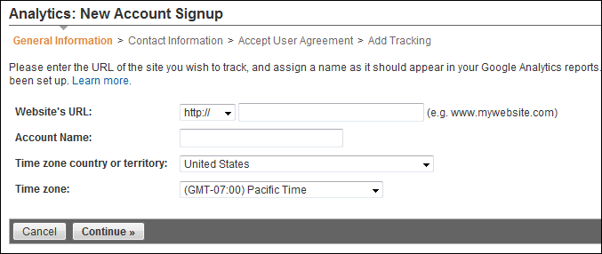
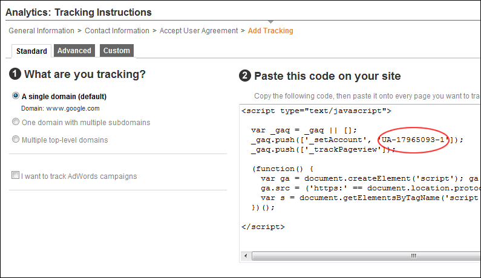
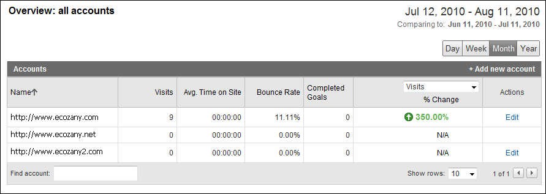
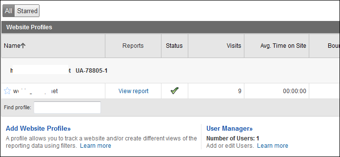

Signing Up for Google Analytics
How to sign up for a Google Analytics account.
- Go to http://www.google.ca/analytics/
- Click the Sign Up Now link and follow the prompts.
- Once you gain access to the Google Analytics dashboard, go ahead and create an account for your site. Here are different pathways for new users and existing Google Analytics users.
New Users
- At My Analytics Accounts (located on the top right) select "Create New Account" from the drop down list and then click the Sign Up button. This displays the "Analytics: New Account Signup" page.
-
Complete the "Analytics: New Account Signup" information as per your requirements, along with the Contact Information, and User Agreement pages.

- Once complete, you will end up on the "Add Tracking" page, which should resemble something similar to the below image. The single most important piece of information on this page is the Tracking ID, based on the above screen shot our new Tracking ID is: “UA-17965093-1”. Copy this down in a safe place.

Existing Users
- Existing Users should see their account on the home page of Google Analytics, something similar to this image:

- Under the Name field, click the relevant Domain which you need to start tracking. It should switch over, and now the Name field includes the URL along with the tracking code to the right. Similar to:

- As you can see above, the tracking code is “UA-78805-1”, copy this down into a safe place. You are now ready to begin "Configuring Google Analytics" or "Configuring Google Analytics Pro"